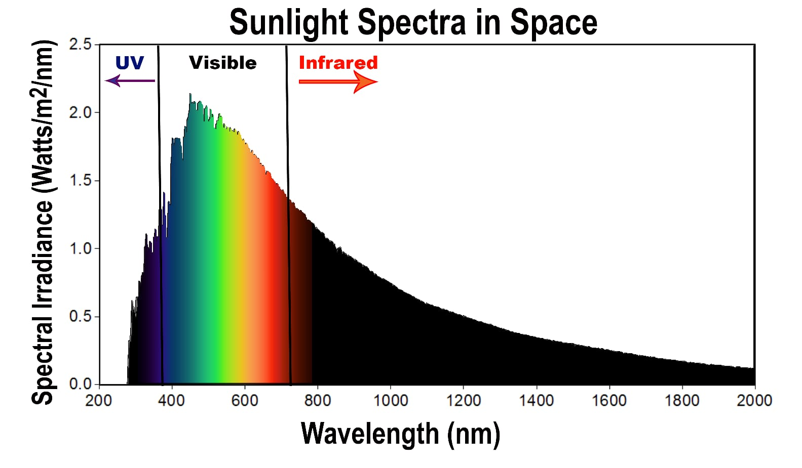
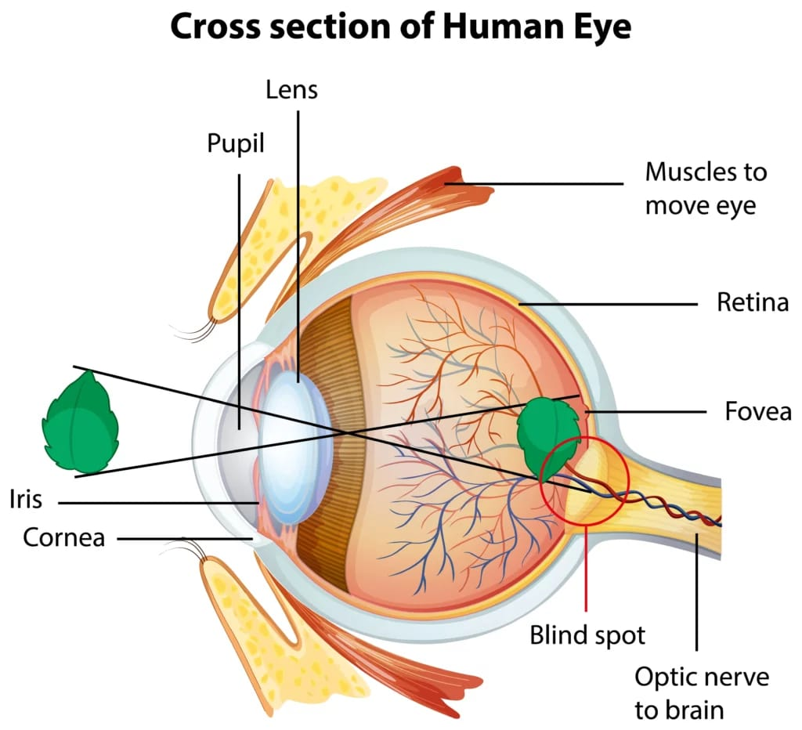
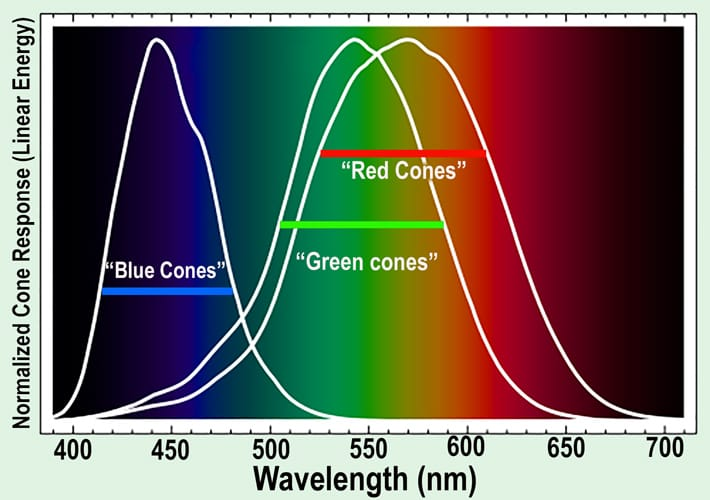

Color is a property of light perceived by the organisms that view it. The color of objects is influenced by how that object interacts with the incoming light illuminating it. A banana appears yellow to the human eye because the banana peel is absorbing strongly all wavelengths of visible light except for a range of the yellow wavelengths, which are being reflected back to the viewer. This allows us to visually detect the object that our brain recognizes as a "YELLOW BANANA!""
Similarly, in the ocean, water molecules strongly absorb red light, preferentially leaving behind the blue light which we see as the deep azure color of the open ocean. Explore the wide range of ocean colors in PACE's Ocean Color Image Gallery.
This, of course, contrasts with the blue sky, which is blue due to the preferential scattering of shorter wave lengths of light.
4.2 Incoming Light Spectrum - Sunlight!

The Sun sends out many different types of light, but the sunlight that reaches Earth's surface is less colorful because parts of it are absorbed by our atmosphere. Our eyes can only see a small part of the light spectrum, which we call visible light.
The sunlight that makes it to Earth can look different throughout the day and changes depending on how much cloud cover there is. Clouds play an important role in how we see light: some clouds absorb light and release it as heat, while others reflect or block sunlight.
The spectral composition of sunlight (the mix of colors and light energy) changes based on time of day, cloud types, and other conditions. These factors affect how much light and heat we get from the Sun.
4.3 What determines the color of an object?
We know that the color of an object that we see is due to the light reflected off of that object. If a banana is ripe, it will reflect back yellow light. If a banana is not ripe, it will reflect more green light. If the banana is very ripe, we'll see a black banana (and probably smell it too!).
Let's talk about how scientists measure light and colors. We see colors because objects reflect different wavelengths of light. To measure these wavelengths, scientists use a tool called a spectrometer. It helps them figure out which wavelengths of light are being reflected off an object.
For example, a green banana reflects more light at a wavelength of 550 nanometers (nm), while a ripe banana reflects more light around 675 nm. The amount of light reflected at different wavelengths can be shown on a graph, which is called the object's spectral signature. It's like a fingerprint, but for light unique to each object.
Scientists use these spectral signatures to identify different materials. For instance, in the ocean or the atmosphere, if they know the spectral signature of things like phytoplankton (tiny plants in the ocean) or smoke, they can figure out what kind of stuff the light interacted with. This helps them learn more about what's in the ocean or the air by looking at how the light behaves.
Check out the end of this page for a fun mini-game!! 😃 😃
4.4 How does Human Vision work?


Let's follow how light travels to our eyes!
When light reflects off objects, it enters our eyes through a tough outer layer called the cornea. Then, it passes through a hole in the center of our eye called the pupil. The amount of light that gets in is controlled by a muscle called the iris, which is the colored part of your eye.
In low light conditions, the iris opens up, making the pupil bigger so that more light can enter. In bright light, the iris makes the pupil smaller to let in less light.
Once the light is inside the eye, it goes through a flexible part called the lens, which helps focus the light onto the back wall of the eye, known as the retina.
The retina has special cells called photoreceptors. There are two types:
Rods help us see in low light and are sometimes called "night vision" because they help us see in black and white.
Cones let us see colors and help us see in bright light.
Advanced Topic: Looking at PACE Data in RGB
Humans are hardwired to see in a trichromatic spectrum, or red, green, and blue vision (RGB). So, it is not a surprising that computer monitors, printers, and digital cameras are often designed to show color in terms of RGB. Here's how it works. The light sources within computer monitors and TV screens are made up of groups of three pixel sets. Each set of three pixels has a red light, green light, and blue light. Different colors are then produced by controlling how much light is emitted from each of these pixels, much like mixing colors of paint. Check out the image to the right to see how altering RGB combinations of each of these colors is used to create a full color wheel.